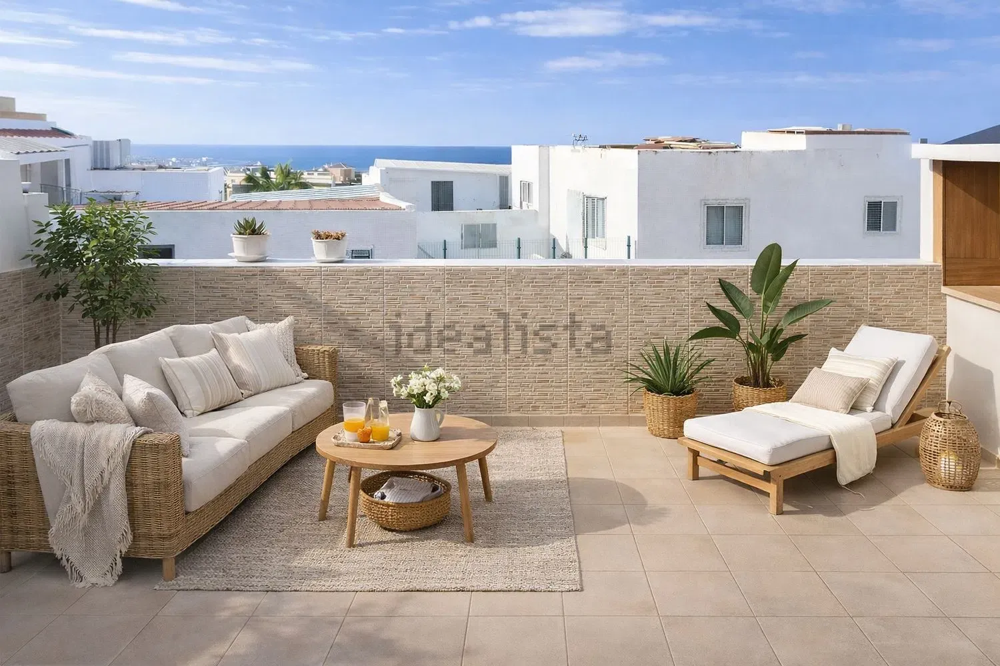
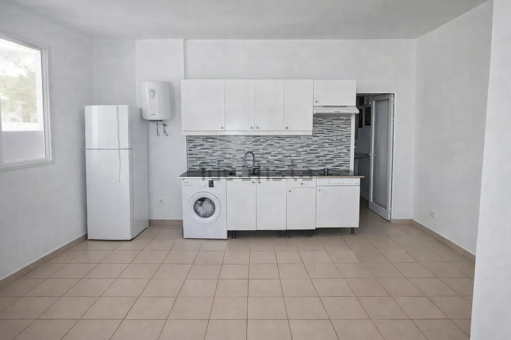
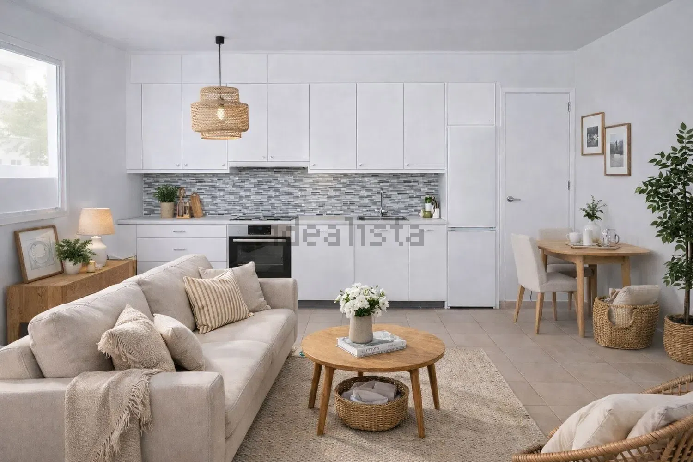
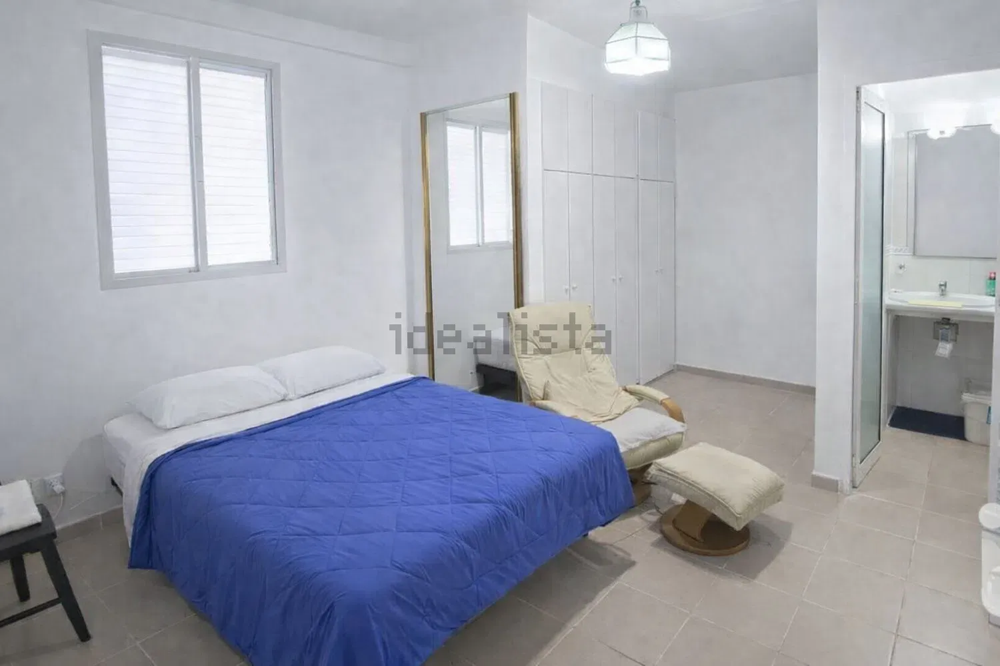

En venta · Apartamento · Ref. 110909579
Apartamento con terraza de 15 m² y vistas al mar
Casco Urbano, Adeje
165.000 €3.300 €/m²





Construidos50 m²
Útiles35 m²
Dormitorios1
Baños1
Año1998
La propiedad
Terraza de 15 m² con vistas al mar, en el casco histórico de Adeje.
Oportunidad en Adeje pueblo. Apartamento de 1 habitación con 35 m² interiores y 15 m² de terraza, ideal para disfrutar del exterior y de sus agradables vistas al mar.
La vivienda necesita únicamente una actualización mínima, por lo que ofrece una excelente base tanto para vivienda habitual como para segunda residencia o inversión.
Ubicado en una zona con servicios, comercios y buena conexión, es una propiedad con mucho atractivo por su terraza, ubicación y potencial de mejora con baja intervención.
Además, ofrecemos acompañamiento tanto en la puesta a punto del inmueble como en el estudio de financiación.
Características
Ficha técnica
- Superficie construida
- 50 m²
- Superficie útil
- 35 m²
- Dormitorios
- 1
- Baños
- 1
- Planta
- 1ª planta exterior
- Ascensor
- No
- Orientación
- Sur
- Año de construcción
- 1998
- Estado
- Segunda mano · buen estado
- Comunidad
- 32 €/mes
- Certificado energético
- F · 30 kWh/m² año · 0,56 kg CO2/m² año
- Referencia
- 110909579
Hablar de esta vivienda por WhatsApp ↗ Pedir información